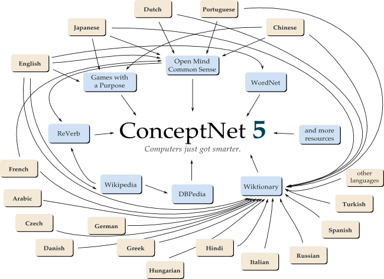

About ConceptNet
ConceptNet is a semantic network containing lots of things computers should know about the world, especially when understanding text written by people.
It is built from nodes representing concepts, in the form of words or short phrases of natural language, and labeled relationships between them. These are the kinds of things computers need to know to search for information better, answer questions, and understand people's goals. If you wanted to build your own Watson, this should be a good place to start!
Notice how the relations between concepts can be abstract notions such as MadeOf, which we use to mean the same thing across all languages; or they can be language-specific text such as "inversely proportional to".
You can click any of these links to begin browsing ConceptNet. You can discover other concepts we know about by changing the URL (we're working on a search interface).
ConceptNet 5 is free
ConceptNet 5 comes largely from the hard work of hundreds of thousands of people who gave their time and knowledge for free. So ConceptNet is free as well, released under a choice of two Creative Commons licenses:
- You can get the entirety of ConceptNet 5 under the Creative Commons Attribution-ShareAlike 3.0 license.
- You may also use a smaller version, called the "ConceptNet 5 Core", under the Creative Commons Attribution 3.0 license. This version is free for any purpose as long as you give credit to the Digital Intuition team. However, this version is necessarily missing a large number of statements learned from Wikipedia, Wiktionary, and DBPedia, all of which are Attribution-ShareAlike resources.
(Until we have a separate download, you get ConceptNet 5 Core by using
ConceptNet 5 and discarding all nodes with {license: 'CC-By-SA'}
in them.)
Sources and how to contribute
Previous versions of ConceptNet were a home-grown crowd-sourced project, where we ran a Web site collecting facts from people who came to the site. The Web of Data is much bigger than that now. Our data comes from many different sources, many of which you can contribute to and improve not just the state of computational knowledge, but of human knowledge.
- To begin with, ConceptNet 5 contains almost all the data from ConceptNet 4, created by contributors to the Open Mind Common Sense project.
- Much of our knowledge comes from the English Wikipedia and its contributors, through two sources:
- DBPedia extracts knowledge from the infoboxes that appear on articles.
- ReVerb is a machine reading project, extracting relational knowledge from the actual text of each article.
- We have also parsed a large amount of content from the English Wiktionary, including synonyms, antonyms, translations of concepts into hundreds of languages, and multiple labeled word senses for many English words.
- More dictionary-style knowledge comes from WordNet.
- Some knowledge about people's intuitive word associations comes from "games with a purpose". We learn things in English from the GWAP project's word game Verbosity, and in Japanese from nadya.jp.
ConceptNet 5 is a graph
To be precise, it's a hypergraph, meaning it has edges about edges. Each statement in ConceptNet has justfications pointing to it, explaining where it comes from and how reliable the information seems to be.
Previous versions of ConceptNet has been distributed as idiosyncratic database structures plus some software to interact with them. ConceptNet 5 is not a piece of software or a database; it is a graph. It's a set of nodes and edges, which we can represent in multiple formats including JSON. You probably know better than we do what software you want to use to interact with it!
That said, you can have our idiosyncratic database if you want, but that's not ConceptNet, it's just a system for quickly looking things up in ConceptNet.
Some other interesting properties:
- The ConceptNet graph is ID-less. Every node and edge contains all the information necessary to identify it and no more in its URI, and does not rely on arbitrarily-assigned IDs. The advantage of this is that if multiple branches of ConceptNet are developed in multiple places, we can later merge them simply by taking the union of the nodes and edges. (And we hope for this to happen!)
- ConceptNet is a property graph, meaning that some of its information is stored in its nodes and edges. For example, each concept stores its human-readable name, and its language. This representation is not quite the same as RDF, but it does match up with other standards such as GraphML and Blueprints (which we are working on interoperating with).
- ConceptNet contains concepts and relations that are pointers to the greater Semantic Web, via DBPedia and soon via RDF/OWL WordNet. For example, our concept cat is linked to the DBPedia node at http://dbpedia.org/resource/Cat.
Beta release
This page provides you with a beta release of ConceptNet 5.0. The actual release will have the same graph structure, but slightly different contents.
Building ConceptNet 5 is a time-consuming process. Basically, there's another version in the pipeline right now, but it still has to take some time to index all the statements.
Web API
The data in ConceptNet 5 is accessible through a Web API that returns JSON data. Here's some very short documentation for it:
- Every concept and assertion in ConceptNet has a URI. Put
http://conceptnet5.media.mit.edu/databefore that URI to retrieve information about that concept, including its incoming and outgoing edges. If there are lots of edges, the results may include a "next" URL to get more. - Another way to say this is that if you browse to the Web page for any
concept, change
/webto/datato look it up in the API.
More detailed documentation is being developed on our wiki.
Downloading ConceptNet 5
If you want all the data in ConceptNet for your application, you can have it! As long as you have particularly fat pipes to the Internet, go ahead and get our massive JSON download.
So, that's a lot of gigabytes. You may find it a lot more convenient to mount our drive (complete with its MongoDB 2.0 database) through Amazon's EBS. Contact us if you want to do that really soon; we're also working on becoming one of their public datasets.
Development
ConceptNet 5 is an open-source project, developed with GPLv3 code hosted on GitHub.
ConceptNet is part of the Commonsense Computing Initiative, a collaboration between the MIT Media Lab and other labs and companies around the world. If you want to set up a sister project to collect a specific kind of data -- perhaps focusing on a particular domain or improving our coverage of a particular language -- we'd be happy for you to contact us.
Authors
The development of ConceptNet 5 is led by Rob Speer, advised by Catherine Havasi. It is also developed by Julian Chaidez, Justin Venezuela, and Yen-Ling Kuo.
Mailing list and contact information
For general questions and further information, join our mailing list on Google Groups.
For specific inquiries about our research group, e-mail digitalintuition@media.mit.edu.